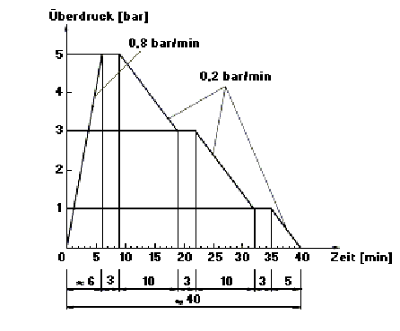

4.1 |
Transportkammern |
| (gegenstandslos) | |
4.2 |
Taucherdruckkammern |
4.2.1 |
Allgemeines |
| 4.2.1.1 | Taucherdruckkammern müssen mindestens aus einer Hauptkammer und einer Vorkammer bestehen. |
4.2.1.2 |
Taucherdruckkammern müssen so beschaffen sein, dass ein maximaler Arbeitsdruck von mindestens 5 bar innerhalb von 6 min erreicht und sicher gehalten werden kann. Eine Druckentlastung von 0,4 auf 0,2 bar Überdruck muss in 1 min möglich sein. |
4.2.1.3 |
Taucherdruckkammern müssen für einen zulässigen Betriebsüberdruck berechnet sein, der 10 % höher ist als der maximale Arbeitsdruck und einem Prüfdruck vom 1,5fachen des zulässigen Betriebsüberdruckes standhalten. |
| Der in Abschnitt 4.17 des AD-Merkblattes HP 30 "Durchführung von Druckprüfungen" festgelegte Prüfdruck wird von 1,3 p auf 1,5 p erhöht, um für Taucherdruckkammern wegen des Aufenthaltes von Personen im Druckbehälter eine höhere Sicherheit zu erreichen. |
4.2.1.4 |
Taucherdruckkammern müssen mit einem Sicherheitsventil als Sicherheitseinrichtung gegen Drucküberschreitung ausgerüstet sein, das ein Überschreiten des zulässigen Betriebsüberdruckes um mehr als 10 % bei maximal anfallendem Massenstrom selbsttätig verhindert. Das Sicherheitsventil darf erst oberhalb des zulässigen Betriebsüberdruckes ansprechen und muss geschlossen sein, bevor der maximale Arbeitsdruck unterschritten ist. Das Sicherheitsventil muss so an der Taucherdruckkammer angeordnet sein, dass es gegen mechanische Beschädigungen, unbeabsichtigte Betätigung und unbeabsichtigte Änderung des Ansprechdruckes geschützt oder gesichert ist. Die Öffnung in der Taucherdruckkammer, durch die die Luft zu dem Sicherheitsventil abströmen kann, muss so angeordnet und so gesichert sein, dass sie nicht unbeabsichtigt dichtgesetzt werden kann. |
| Hinsichtlich Anforderungen an Sicherheitsventile siehe Technische Regeln Druckbehälter "Ausrüstung der Druckbehälter; Einrichtungen zum Erkennen und Begrenzen von Druck und Temperatur" (TRB 403). | |
| Hinsichtlich des Druckausgleiches zwischen Vorkammer und Hauptkammer siehe Abschnitt 4.2.1.13. |
4.2.1.5 |
Abweichend von Abschnitt 4.2.1.4 ist anstelle des Sicherheitsventiles eine Einrichtung zulässig, die rechtzeitig vor dem Überschreiten des zulässigen Betriebsüberdruckes die Druckzufuhr selbsttätig unterbricht und gleichzeitig einen optischen und akustischen Alarm auslöst. Das Alarmsignal muss so gewählt sein, dass es vom Betriebspersonal sicher bemerkt werden kann. |
4.2.1.6 |
Der Innendurchmesser der Taucherdruckkammern muss mindestens 1,48 m betragen. |
| In bestimmten Fällen (§ 14 Abs. 7 Nr. 3 und Abs. 8 der Unfallverhütungsvorschrift "Taucherarbeiten" [BGV C23, bisherige VBG 39]) muss eine Taucherdruckkammer als mobile Druckkammer an der Tauchstelle bereitgestellt werden. Der Mindestdurchmesser wurde deshalb so festgelegt, dass dies mit vertretbarem Transportaufwand möglich ist. Für stationäre Taucherdruckkammern wird ein größerer Innendurchmesser empfohlen. |
4.2.1.7 |
Sitzplätze in Taucherdruckkammern müssen so beschaffen sein, dass je Person eine Sitzbreite von mindestens 0,5 m und eine Sitztiefe von mindestens 0,4 m zur Verfügung stehen und dass eine Abkühlung des Körpers durch Kontakt mit kalten Flächen vermieden wird. |
4.2.1.8 |
Türöffnungen von Taucherdruckkammern müssen so beschaffen sein, dass ein Patient auf einer Krankentrage nach DIN 13024 "Einheits-Krankentrage" bzw. DIN 13024-1 "Krankentrage mit starken Holmen; Maße, Anforderungen, Prüfung" liegend hindurchgebracht werden kann. Runde Türöffnungen müssen eine lichte Weite von mindestens 0,70 m haben. |
4.2.1.9 |
Türverriegelungen müssen nach einem Druckausgleich von beiden Seiten betätigt werden können. |
4.2.1.10 |
(gegenstandslos) |
4.2.1.11 |
Taucherdruckkammern müssen so mit Beobachtungsfenstern ausgerüstet sein, dass alle Plätze in der Taucherdruckkammer leicht einsehbar sind. Die Fensterscheiben müssen aus Acrylglas bestehen. |
4.2.1.12 |
Taucherdruckkammern müssen so mit Beleuchtungseinrichtungen ausgerüstet sein, dass die Nennbeleuchtungsstärke in Kopfhöhe über den Sitzflächen mindestens 200 Lux beträgt. Zusätzlich muss eine bewegliche Leuchte vorhanden sein, deren Nennbeleuchtungsstärke in Höhe der Liegeflächen auf eine kreisförmige Fläche von 50 cm Durchmesser mindestens 500 Lux beträgt. |
4.2.1.13 |
Das Füllen und Entleeren von Vorkammer und Hauptkammer muss unabhängig voneinander möglich sein. Durch Einrichtungen muss verhindert sein, dass der Überdruck in der Vorkammer den Überdruck in der Hauptkammer übersteigen kann. Einrichtungen zur Innensteuerung der Zu- und Abluft sind nicht zulässig. |
4.2.1.14 |
In jeder Druckgaszuleitung muss eine Absperreinrichtung so angebracht sein, dass bei Leitungsbruch Gas aus der Taucherdruckkammer nicht abströmen kann. |
| Die Absperreinrichtung kann z.B. ein Rückschlagventil sein. |
4.2.1.15 |
Jede Gasabführleitung muss über eine an der Wand der Taucherdruckkammer angebrachte Absperreinrichtung ohne Leitungszwischenstück angeschlossen sein. |
4.2.1.16 |
Absperreinrichtungen nach Abschnitt 4.2.1.14 und 4.2.1.15 sind bei kurzen oder bis zum ersten Ventil geschützt verlegten Leitungen nicht erforderlich. |
4.2.1.17 |
Durch bauliche Maßnahmen muss gewährleistet sein, dass in Taucherdruckkammern in Kopfhöhe von sitzenden Personen ein maximaler A-Schalldruckpegel von 90 dB(A) und ein Mittelungspegel von 70 dB(A) für den Prüfzyklus gemäß Bild 1 nicht überschritten wird. |
| Gemessen wird als A-Schalldruckpegel in der Zeitbewertung "I" (Impuls) und der entsprechende Mittelungspegel LAlm nach DIN 45641 "Mittelung von Schallpegeln; Mittelungspegel, Einzelereignispegel". |

| Bild 1: Druckverlauf für die Bestimmung des A-(Impuls-)Schalldruckpegels (LAI) | |
4.2.1.18 |
Für einen ausreichenden Brandschutz müssen folgende Maßnahmen getroffen sein: |
|
| Größere Flächen werden z.B. von Schaumstoffauflagen und -bezügen überdeckt. | |
| MVSS 302 kann bei DIN-Auslandsnormenvermittlung, Postfach 11 07, 10787 Berlin, bezogen werden. |
4.2.1.19 |
Taucherdruckkammern einschließlich ihrer Einrichtungen müssen innen leicht zu reinigen sein. |
4.2.1.20 |
Elektrische Einrichtungen müssen DIN VDE 0100 "Errichten von Starkstromanlagen mit Nennspannungen bis 1000 V", insbesondere Teil 706 "Leitfähige Bereiche mit begrenzter Bewegungsfreiheit", entsprechen. |
| Diese Forderung gilt auch für Beleuchtungseinrichtungen. |
4.2.2 |
Hauptkammern |
4.2.2.1 |
Hauptkammern müssen so gestaltet sein, dass mindestens für eine Person eine Liegefläche vorhanden ist und zwei Personen sitzend untergebracht werden können. |
4.2.2.2 |
Die Zahl der in Hauptkammern zugelassenen Personen muss auf einem Schild über dem Eingang deutlich erkennbar und dauerhaft angegeben sein. |
4.2.2.3 |
Für jede zugelassene Person muss ein Sitzplatz vorhanden sein und ein Kammervolumen abzüglich der Einbauten von mindestens 0,5 m3 zur Verfügung stehen. |
4.2.2.4 |
Hauptkammern müssen mit einer Einrichtung zur Luftspülung ausgerüstet sein. Mit dieser Einrichtung muss die Spülluftmenge von mindestens 30 l/min und Person (gemessen bei Kammerdruck) bei jeder Druckstufe eingestellt werden können. |
4.2.2.5 |
Für jede zugelassene Person muss eine Sauerstoffatemstelle zur Verfügung stehen, die bei Atmosphärendruck mindestens 75 l/min abgibt. Der Sauerstoff muss dem Atemanschluss über einen Lungenautomaten mit dem jeweiligen Kammerdruck zugeführt werden. Das ausgeatmete Gas darf nicht in die Kammerluft gelangen. |
4.2.2.6 |
Hauptkammern müssen mit einer Heizeinrichtung ausgerüstet sein, die so gesichert ist, dass Verbrennungen vermieden werden. Die Heizleistung muss 0,25 kW je m3 Kammervolumen betragen und mindestens in drei Stufen einstellbar sein. |
4.2.2.7 |
Hauptkammern müssen mit mindestens einem Blindflansch DN 80 oder mit zwei Blindflanschen DN 50 für nachträgliche Installationen ausgestattet sein. |
4.2.2.8 |
Hauptkammern müssen mit einer Versorgungsschleuse ausgerüstet sein. Die Mindestmaße der Versorgungsschleuse müssen im Durchmesser 200 mm und in der Länge 300 mm betragen. Die Verschlüsse der Versorgungsschleuse müssen so gesichert sein, dass der eine Verschluss erst geöffnet werden kann, wenn der andere geschlossen und Druckausgleich erfolgt ist. Druckausgleichsöffnungen müssen gegen Dichtsetzen gesichert sein. Ein Überdruckmessgerät muss außen den Druck in der Versorgungsschleuse anzeigen. |
| Hinsichtlich Anforderungen an Schnellverschlüsse siehe Technische Regeln Druckbehälter "Ausrüstung der Druckbehälter, Öffnungen und Verschlüsse" (TRB 402). |
4.2.3 |
Vorkammern |
Vorkammern müssen so ausgerüstet sein, dass zwei Personen sitzend untergebracht werden können. |
4.2.4 |
Bedienungseinrichtungen und Anzeigeinstrumente |
4.2.4.1 |
Bedienungseinrichtungen und Anzeigeinstrumente für Vorkammer und Hauptkammer müssen in einem Bedienungsstand zusammengefasst sein. Sie müssen so angeordnet, beschaffen, gekennzeichnet und gestaltet sein, dass Zuordnung und Schaltsinn eindeutig erkennbar sind. Sie müssen mit einer Nennbeleuchtungsstärke von mindestens 300 Lux beleuchtet sein. |
4.2.4.2 |
Für die Anzeige des Überdruckes in jeder Vorkammer und Hauptkammer muss ein Überdruckmessgerät mit mindestens 160 mm Gehäusedurchmesser, Klasse 0,25, Skalenteilungswert entsprechend 0,1 bar vorhanden sein. Auf dem Zifferblatt des Überdruckmessgerätes muss durch eine rote Warnmarke der maximale Arbeitsdruck und nicht der zulässige Betriebsüberdruck angegeben sein. Die Skalenwerte des Zifferblattes müssen die 3 m-Stufen der Austauchtabelle anzeigen. |
4.2.4.3 |
Für den Druckverlauf in der Hauptkammer muss ein Band-Druckschreiber vorhanden sein. Der Druckschreiber muss Druckänderungen von 0,03 bar und Zeitabschnitte von 1,0 min auswertbar anzeigen. Der Druckverlauf der letzten 2,0 Stunden muss sichtbar sein. |
4.2.4.4 |
Zusätzlich zu den Anzeigeeinrichtungen nach Abschnitt 4.2.4.2 und 4.2.4.3 müssen am Bedienungsstand Anzeigeeinrichtungen für
|
4.2.4.5 |
Eine netzunabhängige Uhr mit Sekundenanzeiger muss so angebracht sein, dass sie vom Bedienungsstand aus ablesbar ist. Uhren mit Digitalanzeige sind als alleinige Anzeige nicht zulässig. |
4.2.5 |
Druckluft- und Sauerstoffversorgung |
4.2.5.1 |
Luftversorgungsanlagen müssen für den Betrieb einen Druckluftvorrat aufweisen, der ausreicht für: |
|
| Der Wert von 90 l/min Spülluft bezieht sich auf die Belegung der Hauptkammer mit drei Personen nach Abschnitt 4.2.2.1 (eine liegende und zwei sitzende Personen). Bei Auslegung der Hauptkammer für eine größere Personenzahl muss die Spülluftmenge für jede Person 30 l/min betragen. |
4.2.5.2 |
Ein Druckluft-Notvorrat muss zur Verfügung stehen, der mindestens 50 % des Druckluftvorrates nach Abschnitt 4.2.5.1 beträgt. Dieser Notvorrat muss in gesonderten, während des Normalbetriebes abgesperrten Druckbehältern bereitstehen, oder das Überdruckmessgerät für die Druckluft-Vorratsbehälter nach Abschnitt 4.2.4.4 muss eine entsprechende Kennzeichnung aufweisen. |
4.2.5.3 |
Ein Druckluft-Notvorrat nach Abschnitt 4.2.5.2 ist nicht erforderlich, wenn ein Kompressor zur Verfügung steht, der mindestens die nach Abschnitt 4.2.5.1 Nr. 4 geforderte Spülung der Hauptkammer sicherstellt und Luft der Reinheit entsprechend DIN EN 12021 "Atemschutzgeräte; Druckluft für Atemschutzgeräte" liefert. |
4.2.5.4 |
Luftversorgungsanlagen müssen mit einer zusätzlichen Einspeisungsmöglichkeit ausgerüstet sein. |
| Eine solche Einspeisungsmöglichkeit ist z.B. ein Anschluss für Druckgasbehälter. |
4.2.5.5 |
Für die Sauerstoffatemstellen nach Abschnitt 4.2.2.5 muss ein Sauerstoffvorrat von mindestens 20 m3 bereitstehen. |
4.2.6 |
Einrichtungen zur Kommunikation |
4.2.6.1 |
Zwischen Vorkammer und Bedienungsstand und zwischen Hauptkammer und Bedienungsstand muss eine Sprechanlage mit Lautsprecher installiert sein, die am Bedienungsstand auf Dauerempfang geschaltet ist. Die Umkehr der Sprechrichtung muss durch einen Schalter mit selbsttätiger Rückstellung am Schaltpult erfolgen. |
4.2.6.2 |
Zusätzlich zur Sprechanlage nach Abschnitt 4.2.6.1 muss eine netzunabhängige Telefonverbindung vorhanden sein. |
4.2.6.3 |
Zwischen Vorkammer und Bedienungsstand und zwischen Hauptkammer und Bedienungsstand muss jeweils mindestens eine Notsignalanlage mit auffälliger optischer und akustischer Anzeige am Bedienungsstand installiert sein. Die Signaltaster in den Kammern müssen deutlich erkennbar und dauerhaft gekennzeichnet sowie leicht erreichbar sein. |
4.2.7 |
Ersatzstromversorgung |
Für die Beleuchtung der Taucherdruckkammer, die Beleuchtung des Bedienungsstandes sowie für alle zur Sicherheit im Betrieb erforderlichen Stromverbraucher muss eine allgemeine Ersatzstromversorgung (AEV) nach DIN VDE 0108 "Errichten und Betreiben von Starkstromanlagen in baulichen Anlagen für Menschenansammlungen sowie von Sicherheitsbeleuchtung in Arbeitsstätten" vorhanden sein. Diese muss bei Netzausfall die Stromversorgung der Verbraucher übernehmen und für mindestens 5 Stunden sicherstellen. |